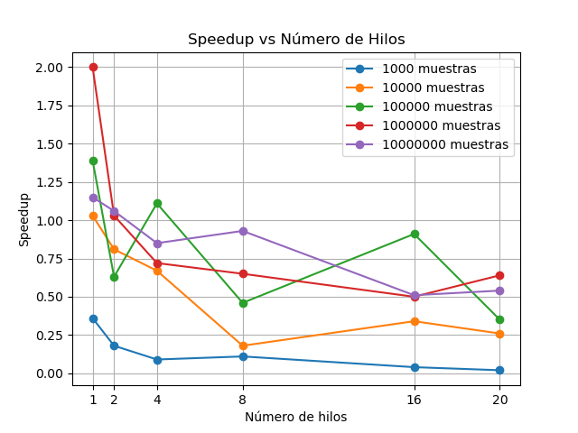

Visualización de Resultados - Monte Carlo con OpenMP
1. Speedup vs Número de Hilos

Comparación del speedup obtenido al aumentar el número de hilos, para distintos tamaños de muestra.
2. Tiempo Paralelo vs Número de Muestras
Tiempo de ejecución paralela en función del número de muestras, usando diferentes cantidades de hilos.
3. Error Absoluto en π vs Número de Muestras
Precisión del valor estimado de π a medida que aumentan las muestras, diferenciando por hilos.